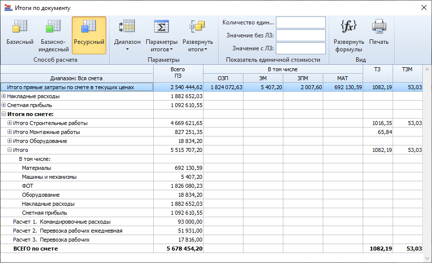

Парсер извлекает информацию из всех файлов ГРАНД-Смета вида «ЛС» и выводит настройки из вкладки «Документ» → кнопка «Итоги» → в появившемся окне кнопка «Ресурсный».

| Столбец | Описание |
|---|---|
| Диапазон | Ресурсный расчет |
| ПЗ | Всего ПЗ |
| ОЗП | В том числе: ОЗП |
| ЭМ | В том числе: ЭМ |
| ЗПМ | В том числе: ЗПМ |
| МАТ | В том числе: МАТ |
| ТЗ | ТЗ |
| ТЗМ | ТЗМ |
| ТипСтр | Тип строки итогов • ForOneBase — На единицу в базисных ценах • ForOneCurr — На единицу в текущих ценах • ForOneResBase — На единицу в базисных ценах ресурсным методом • ForOneWithResChange — На единицу в базисных ценах с учетом стоимости измененных ресурсов • PosK — Коэффициенты к позиции • ItogK — Коэффициенты к итогам • PosI — Итого на единицу с учетом индекса • ItogI — Всего с учетом индекса • TotalFo — ВСЕГО на физобъем • FullPrice — Полная стоимость позиции (с учетом индекса к СМР) • SMRI — Всего с учетом индекса (попозиционного к СМР) • FullWithWinter — Итого по позиции с ЗУ • TotalWithWinter — Всего с учетом ЗУ • OsIndex — Итого с учетом индекса к СМР, с привязкой по Графам ОС • BadPos — Позиция, которую невозможно учесть в расчете • BadPosRoot — Позиции, которые невозможно учесть в расчете сметы (корневой узел) • Nacl — Накладные расходы • Plan — Сметная прибыль • TotalWithNP — Итого c накладными и см. прибылью • NSummRoot — Накладные расходы, Итоговый показатель • PSummRoot — Сметная прибыль, Итоговый показатель • NSummDet — Накладные расходы детализация • PSummDet — Сметная прибыль детализация • KSummRoot — Итого прямые затраты по смете с учетом коэффициентов к итогам • KSummDet — Коэффициент к итогам (разбивка по статьям затрат) • LzBase — Сумма для начисления Лимитированных затрат • CalcError — Ошибка в математическом расчете • KGroup — Итог по группе позиций с одинаковым Общим коэффициентом • IndexGroup — Итог по группе позиций с одинаковым Индексом по статьям затрат • NPGroup — Итог по группе позиций с одинаковыми нормами НР и СП • VrGroup — Группа видов работ/Вид работ • SMRIndexGroup — Итого по группе позиций с одинаковым индексом к СМР • WinterGroup — Итог по группе позиций с одинаковыми нормами Зимних удорожаний • PriceGroup — Итог по группе позиций с одинаковым уровнем цен • OSGroup — Итого Графе ОС • ChapterGroup — Итого по Разделу в итогах сметы • Lz — Сумма лимитированной затраты • CleanPrice — Итого прямые затраты по разделу в Исходном уровне цен • GroupInitial — Первая строка итогов в группе, информационная • SmetaTotal — ВСЕГО по смете • SubTotal — Итого (Промежуточный итог) • LevelSubTotal — Итого (Промежуточный итог с разными уровнями начисления) • ChapterTotal — Итого по разделу • OwnerMat Itog — Материалы/Оборудование заказчика • Return Itog — Возвратные материалы • NaclZpm — Накладные расходы от ЗПМ • PlanZpm — Сметная прибыль от ЗПМ • OwnerEq Itog — Оборудование Заказчика • PZ — Прямые затраты (Методика 2020) • OT — Оплата труда рабочих (Методика 2020) • EM — Эксплуатация машин (Методика 2020) • OTM — Оплата труда Механизаторов (Методика 2020) • MAT — Материалы (Методика 2020) • FOT — Фонд оплаты труда (Методика 2020) • ZT — Затраты труда (в позиции) (Методика 2020) • ZTm — Затраты труда Машинистов (в позиции) (Методика 2020) • TZ — Затраты труда (Методика 2020) • TZM — Затраты труда Машинистов (Методика 2020) • Koefficients — Узел итогов позиции Коэффициенты (Методика 2020) • TotalPos — Узел итогов позиции Коэффициенты (Методика 2020) • Res — Узел итогов позиции Коэффициенты (Методика 2020) • MatNoTransportation — Материалы без учета транспорта (Методика 2020) • AdditionalTransportation — Дополнительная перевозка (Методика 2020) • Transportation — Перевозка (Методика 2020) • OS_Constr — Итог по графе ОС Строительные работы (Методика 2020) • OS_Mount — Итог по графе ОС Монтажные работы (Методика 2020) • OS_Mining — Итог по графе ОС Горные работы (Методика 2020) • OS_Equip — Итог по графе ОС Оборудование (Методика 2020) • OS_Other — Итог по графе ОС Прочие (Методика 2020) • CategoryConstruction — Итог по категории Строительные работы (Методика 2020) • CategoryRestoration — Итог по категории Ремонтно-реставрационные работы (Методика 2020) • CategoryConstrTransportation — Итог по категории Транспортные расходы (перевозка) для Строительных работ (Методика 2020) • CategoryTransportation — Итог по категории Транспортные расходы (перевозка) (Методика 2020) • CategoryConstrAddTransportation — Итог по категории дополнительная перевозка для Строительных работ (Методика 2020) • CategoryConstrRelated — Итог по категории перевозка относимая на стоимость Строительных работ (Методика 2020) • CategoryMounting — Итог по категории Монтажные работы (Методика 2020) • CategoryMountingTransportation — Итог по категории Транспортные расходы (перевозка) для Монтажных работ (Методика 2020) • CategoryMountingAddTransportation — Итог по категории дополнительная перевозка для Монтажных работ (Методика 2020) • CategoryMountingRelated — Итог по категории перевозка относимая на стоимость Монтажных работ (Методика 2020) • CategoryEquipment — Итог по категории Оборудование (Методика 2020) • CategoryEqEngineering — Итог по категории Инженерное оборудование (Методика 2020) • CategoryEqTech — Итог по категории Оборудование (Методика 2020) • CategoryEqLaboratory — Итог по категории Лабораторное оборудование (Методика 2020) • CategoryEqVehicles — Итог по категории Оборудование механизмы (Методика 2020) • CategoryEqTools — Итог по категории Инструмент (Методика 2020) • CategoryEqInventory — Итог по категории (Методика 2020) • CategoryOther — Итог по категории Прочие затраты (Методика 2020) • CategoryCommissioning — Итог по категории Пусконаладочные работы (Методика 2020) • CategoryOtherTransportation — Итог по категории Перевозка, относимая на стоимость прочих работ (Методика 2020) • CategoryOtherAddTransportation — Итог по категории дополнительная перевозка для Прочих работ (Методика 2020) • CategoryOtherRelated — Итог по категории Отдельные виды работ и затрат, относимые на стоимость прочих работ (Методика 2020) • CategoryMining — Итог по категории Горные работы (Методика 2020) • CategoryMiningAddTransportation — Итог по категории дополнительная перевозка для Горных работ (Методика 2020) • CategoryEqAddTransportation — Итог по категории дополнительная перевозка, относимая на стоимость оборудования (Методика 2020) • CategoryOtherFineArt — Работы по созданию произведений изобразительного искусства монументального характера (Методика 2020) • CategoryTranspDumpTrucks — Итог по категории Перевозка (Автомобили-самосвалы) • AuxMat — Вспомогательные ненормируемые материальные ресурсы |
Всего столбцов: 9